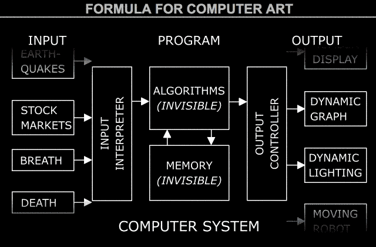

Creative Computing
Joel Gethin Lewis
Week 1: Lecture 2: Remembering
What I'm going to talk about now:
- Group meditation.
- Questions.
- Overview of current Creative Coding frameworks.
- Introduction to JavaScript.
- Processing, p5.js, ml5.js, pts.js.
- p5.js web editor, Glitch.com, Visual Studio Code.
- Daniel Shifmann, The Nature of Code, The Coding Train, Rune Madsen, Programming Design Systems, Gene Kogan, Machine Learning for Artists.
- openFrameworks, the oFBook.
- zzz.dog, three.js, Mr Doob and A-Frame and AR.
- Unreal engine, Blender and Rubber Duck Debugging.
- Data Types: primitive, composite and abstract.
- Feedback.
- Homework Assignment.
0. Group Meditation
- The Egg.
- All in a circle. Comfortable positions. Eyes closed. Breathing through the belly. Anyone want a pillow to sit on?
- Trigger warning - this meditation is about what might happen when you die. If you want to sit this out for any reason, I'll give a shout on the Slack when we are done. Each to their own.
2. Overview of current Creative Coding frameworks.
- 
- Jim Campbell's
formula for
Computer Art (2001) via Golan
Levin.
- Creative Coding frameworks make machines that make machines like this.
2. Overview of current Creative Coding frameworks (continued).
- Different freedoms: Open Source
vs. Closed Source. Is this Political?
- Different interaction methods: Text based vs. Graphical User Interface vs. Node based vs. Live
coding vs. ? Is this a matter of style?
- Different deployment platforms: desktop vs. web/cloud vs. smartphone vs. new hardware vs. paper
vs. TV vs. games vs. drone vs. ? What does this mean?
- Different costs? What other ethical concerns? Questions?
2. Overview of current Creative Coding frameworks (continued).
3. Introduction to JavaScript.
4. Processing, p5.js, ml5.js, pts.js.
5. p5.js web editor, Glitch.com, Visual Studio Code.
6. Daniel Shiffman, The Nature of Code, The Coding Train, Rune Madsen, Programming Design Systems,
Gene Kogan,
Machine Learning for Artists.
7. openFrameworks, the oFBook.
- openFrameworks.
- Founded by Zach Lieberman, Theo Watson and Arturo Castro.
- Zach, Theo and I founded a company called YesYesNo in 2008, only Zach is still involved. Theo co-founded a studio called Design I/O (does that remind you of the computer art diagram?) in 2010.
- Great book on learning openFrameworks (and
other things, like C++ and graphics and how to keep installations with software running 4evr): the
oFBook.
8. zzz.dog, three.js, Mr Doob and A-Frame and AR.
9. Unreal Engine, Blender and Rubber Duck Debugging.
- Unreal Engine is interesting - currently in
use by Nintendo to make Zelda Breath of the Wild. If it's good enough for them, it's good enough
for me. Anyone used it? I want to next term.
- Blender is an interesting platform - combining 3d
modelling, rendering,
animation tools, editing and a real time game engine. Has anyone else tried it? I want to next
term.
- Rubber Duck Debugging is a
useful tool. Try
it. Would you find one useful?
10. Data Types: primitive, composite and abstract.
- What is a Data type? What kinds of Data types are there?
- What kind is an int?
- What kind is a string?
- What kind is a float?
- What kind is an array?
- What kind is a vector?
- What kind is a bool?
- What kind is a queue?
- What kind is a char?
11. Feedback
- What's working?
- What's not working?
- What am I missing?
- Lets talk now or you can Slack me in private.